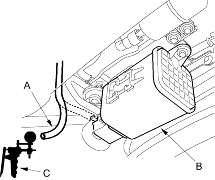
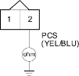

Except D15Y3 (PA, KW, KT, KN models), D16W9 (PA model), D17A5 (KN model) engines
- Inspect the No. 4 ACG (10A) fuse in the under-dash fuse/relay box.
Is fuse OK?
YES |
- Go to step 2. |
NO |
- Replace the fuse, and recheck. |

- Disconnect the vacuum hose (A) from the EVAP canister (B) and connect a vacuum pump/gauge (C) to the hose.

- Start the engine and let it idle.
NOTE: Engine coolant temperature must be below 70°C (158°F).
- Quickly raise the engine speed to 3,000 rpm (min-1).
Is there vacuum?
YES |
- Go to step 5. |
NO |
- Go to step 10. |
- Disconnect the EVAP canister purge valve 2P connector.
- Quickly raise the engine speed to 3,000 rpm (min-1).
Is there vacuum?
YES |
- Inspect vacuum hose routing. If OK, replace the EVAP canister purge valve. |
NO |
- Go to step 7. |
- Turn the ignition switch OFF.
- Disconnect ECM/PCM connector B (24P).
- Check for continuity between the EVAP canister purge valve 2P connector terminal No. 2 and body ground.

Is there continuity?
YES |
- Repair short in the wire between the EVAP canister purge valve and the ECM/PCM (B21). |
NO |
- Substitute a known-good ECM/PCM and recheck. If the symptom/indication goes away, replace the original ECM/PCM. |
- Start the engine. Hold the engine at 3,000 rpm (min-1) with no load (in Park or neutral) until the radiator fan comes on, then let it idle.
- Check for vacuum at the vacuum hose after starting the engine.
- Quickly raise the engine speed to 3,000 rpm (min-1).
Is there vacuum?
YES |
- Go to step 23. |
NO |
- Go to step 13. |
- Turn the ignition switch OFF.
- Inspect the vacuum hose routing.
Is the vacuum hose OK?
YES |
- Go to step 15. |
NO |
- Repair the vacuum hose. |
- Disconnect the EVAP canister purge valve 2P connector.
- Turn the ignition switch ON (II).